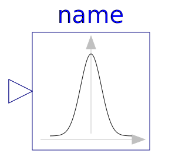

This package contains utility models that are used for the examples.
| Name | Description |
|---|---|
|  UniformDensity | Calculates the density of a uniform distribution |
| NormalDensity | Calculates the density of a normal distribution |
| WeibullDensity | Calculates the density of a Weibull distribution |
|
|
Block generating random numbers with the impure random number generator |
| Parts for use in the ActuatorWithNoise examples |
| Date | Description | ||
|---|---|---|---|
| June 22, 2015 |
|